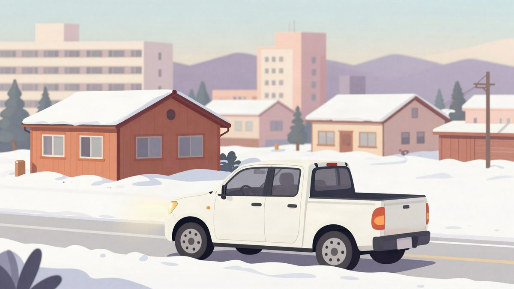

Japanska općina Shihoro umjesto školskog busa pokrenula je besplatni AI taxi Potetaku

Japanski startup Public Technologies i općina Shihoro na Hokkaidu pokrenuli su probni prijevoz na zahtjev Potetaku. Usluga je besplatna za stanovnike od 13 godina nadalje, a traje do ožujka 2027. Rezervacija ide aplikacijom ili preko pozivnog centra, a voze je taksisti i vozači školskih autobusa.
Japanski GovTech startup Public Technologies je 9. listopada 2026. u općini Shihoro na otoku Hokkaido pokrenuo probni AI prijevoz na zahtjev. Usluga se zove Potetaku, a namijenjena je stanovnicima Shihora koji su učenici niže srednje škole i stariji. Vožnja je besplatna, a probni rad traje do ožujka 2027.
Shihoro se suočava sa starenjem stanovništva i sve većim brojem vozača koji vraćaju vozačke dozvole. Zimi je izlazak iz kuće posebno težak. Školski autobus za ruralna područja, gradski autobus i taksi vaučeri u općini su dosad radili odvojeno, što je smanjivalo učinkovitost prijevoza. Gradski autobus vozi po fiksnim linijama i često ne dovozi putnike izravno do odredišta.
Potetaku zamjenjuje dnevne vožnje školskog autobusa, koje su ukinute 30. rujna. Voze ga taksisti i vozači školskih autobusa. Putnik se od kuće vozi do jedne od točaka ukrcaja, a natrag od točke do kuće. Točke su uglavnom ista stajališta kao i kod gradskog autobusa: općina, bolnica, Aspo, Town Plaza i mjesni domovi.
Vozila i rezervacije
Obično voze četiri osobna automobila s tri mjesta. Kad se očekuje veća potražnja, uključuje se karavan s osam mjesta. Raspored vozila, rute i dijeljenje vožnje računa sustav Pubtech AI dispatch, koji je dio aplikacije Pubtech za lokalne uprave.
Rezervirati se može aplikacijom Pubtech ili preko pozivnog centra koji vode lokalni prijevoznici. Aplikacija radi i na engleskom, korejskom, pojednostavljenom kineskom, vijetnamskom, kmerskom i indonezijskom. Rezervacija je moguća od tri radna dana unaprijed do 17 sati prethodnog radnog dana, a prije toga treba se registrirati.
Vozi se radnim danom i druge subote u mjesecu, od 10 do 12 sati te od 13 do 14:30. Vikendom, praznicima i od 29. prosinca do 3. siječnja usluga ne radi.
Tko stoji iza projekta
Nositelj projekta je općina Shihoro, a vožnje obavljaju Shihoro Hire i Shihoro Kotsu. Public Technologies je izvođač koji pokriva istraživanje, planiranje, sustav za raspoređivanje, operativu i vrednovanje učinka. Oblik usluge osmislila je na temelju ankete među stanovnicima, razgovora s prijevoznicima i analize podataka o postojećim linijama iz prethodne fiskalne godine.
Općina će po podacima o korištenju i anketama putnika odlučiti kako će usluga izgledati iduće godine. Public Technologies želi iskustva iz Shihora iskoristiti da se smanji broj područja bez javnog prijevoza diljem Japana.
Izvor: PR TIMES (JP)